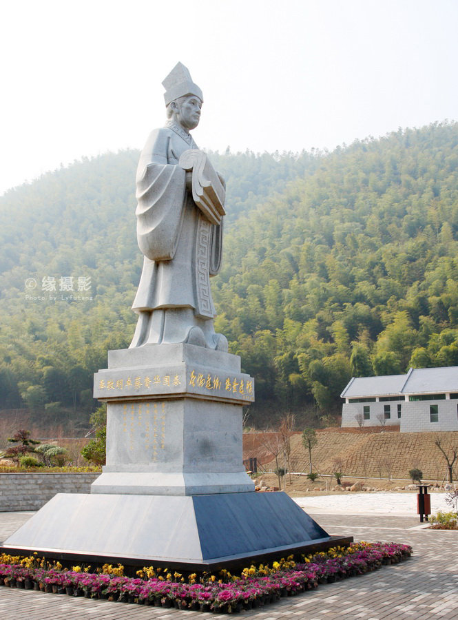
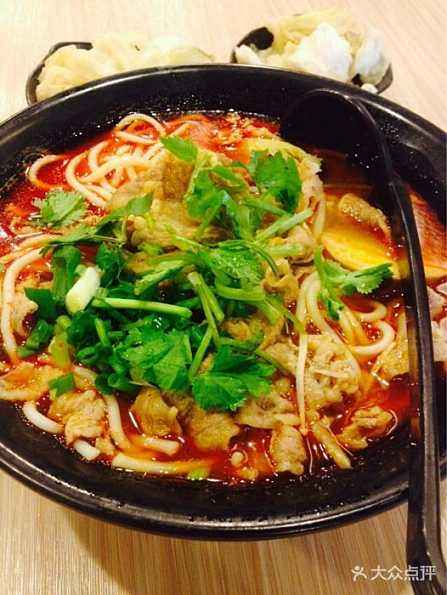
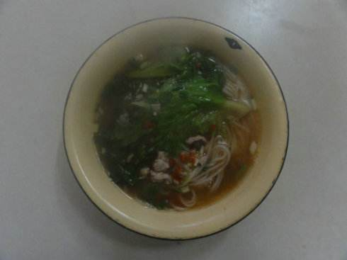
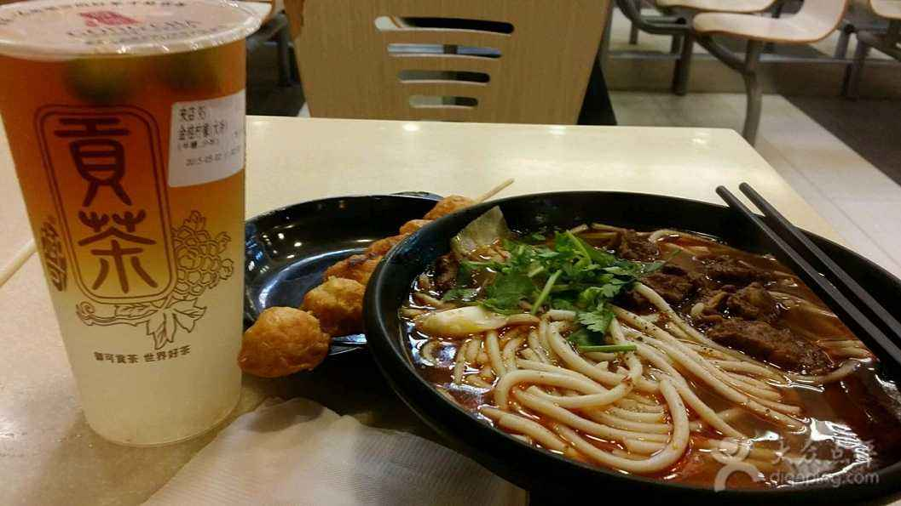
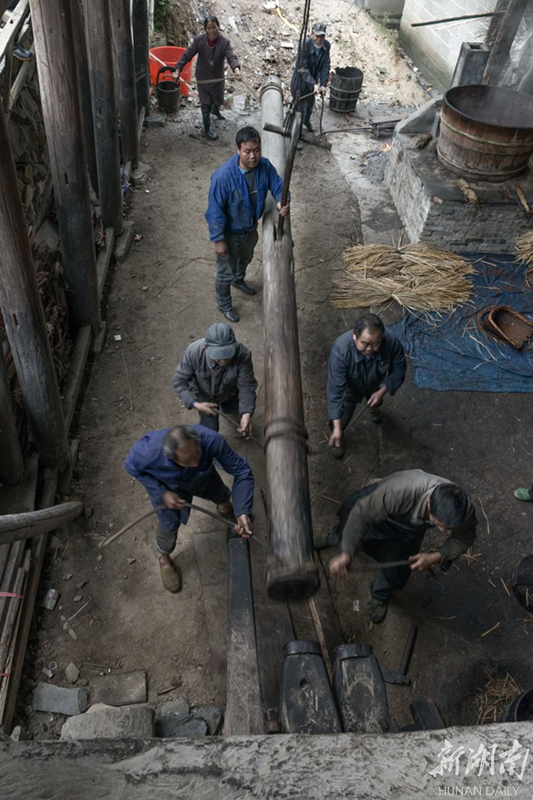
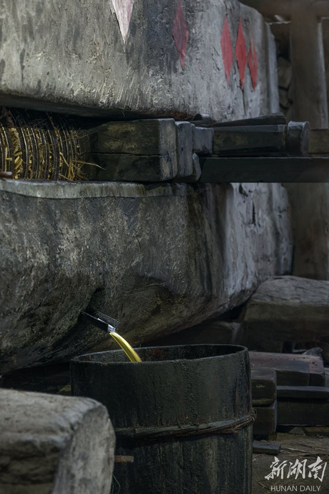
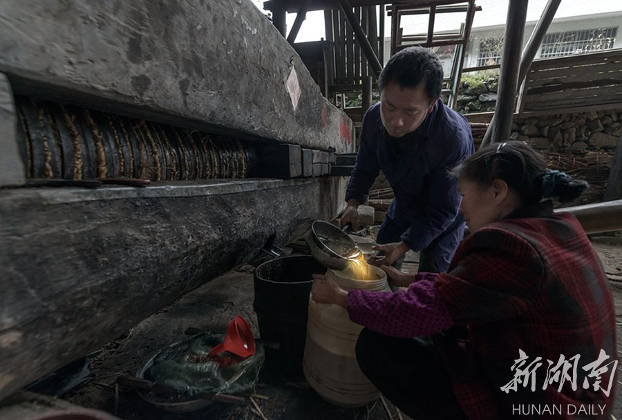

蔡伦

字敬仲，桂阳(治今湖南郴州)人。宦官。明帝末入事宫中，和帝时为中常侍、尚方令，掌监作秘剑及诸器械，做工精密。伦改进造纸法，世称“蔡侯纸”。安帝时封龙亭侯。安帝亲政，因曾诬陷安帝祖母宋贵人，惧辱自杀。
【生卒】：?—121
【介绍】：
东汉桂阳人，字敬仲。有才学。明帝后期入宫，章帝时为小黄门。和帝时为中常侍，加位尚方令。改进西汉以来用丝麻造纸技术，用树皮、麻头及敝布、鱼网为造纸原料，提高质量，元兴元年奏上，时称“蔡侯纸”。安帝元初元年封龙亭侯，为长乐太仆。以前受窦后讽旨，诬陷安帝祖母宋贵人，敕使自致廷尉。饮药死。
竹海

 蔡伦竹海位于中南重镇、历史文化名城--耒阳市黄市镇和大义乡境内，面积100平方公里，
中心景区达66平方公里，集观光、休闲、探险、寻宝于一体的复合型旅游风景区，
现为国家AAAA级旅游景区、中国最具魅力生态旅游景点景区、国家级水利风景区、
省级风景名胜区、省级森林公园和省级山地车训练基地。筹建国家5A级旅游风景区、
国家级风景名胜区、国家森林公园、国家矿山公园。蔡伦竹海面积广阔，连片竹林面积达16万亩，
是我国连片面积最大的竹海，有着"亚洲大竹海"、"天然大氧吧"的美誉。京珠高速公路、
京广高铁等并辔而过，107国道、320省道和京广铁路交织成网。
蔡伦竹海位于中南重镇、历史文化名城--耒阳市黄市镇和大义乡境内，面积100平方公里，
中心景区达66平方公里，集观光、休闲、探险、寻宝于一体的复合型旅游风景区，
现为国家AAAA级旅游景区、中国最具魅力生态旅游景点景区、国家级水利风景区、
省级风景名胜区、省级森林公园和省级山地车训练基地。筹建国家5A级旅游风景区、
国家级风景名胜区、国家森林公园、国家矿山公园。蔡伦竹海面积广阔，连片竹林面积达16万亩，
是我国连片面积最大的竹海，有着"亚洲大竹海"、"天然大氧吧"的美誉。京珠高速公路、
京广高铁等并辔而过，107国道、320省道和京广铁路交织成网。
新市米粉



新市米粉在整个耒阳乃至耒阳的几个周边县市早有名气，其独特的做法决定了它独特的口感和味道，
至今已经具有上百年的历史了，据说，新市米粉的正宗做法是从米粉的手工压榨到米粉的煮法都具有其特殊之处。
首先介绍米粉的压榨，先将上等的粳米用冷水浸泡24小时以上，
当米用手可捻烂且闻起来有点馊味时就带水一起用石磨研磨成粉，
过滤去除大部分水分后得到米粉团，再取部分米粉用热水浇泡成半熟，称为阴阳粉，
将其掺到大量的生米粉里面一块儿揉搓，搓揉至具有粘性成团而不散为止，然后将米粉团上榨压榨，
用来榨米粉的榨是由几根大木头做的，直接架在火灶上的大锅上方，锅子里盛满热水
，榨中心位置放有一个铸铁做的铁筒，铁筒底部有一个布满小孔的钢板，
米粉团在人工的压榨下从小孔中挤出就成了一根根的米粉，
待水开始沸腾时就直接将榨出的米粉接放到大锅的热水中，煮个半熟就捞出来立即浸到冷水里，
这样经过人工压榨的米粉口感好，有筋斗。下一步就是煮粉了，
新市米粉之所以味道好的第二个原因就是粉的煮法独特，首先要配好汤汁，
这汤汁是用新鲜的猪骨头(排骨和筒子骨)经过几个小时的熬煮，配以适当的佐料而得来的，
具有色泽清亮，味浓而鲜，每碗米粉都是单独配料煮的，
取新鲜的猪精瘦肉(最好是里脊肉)切片放到盛有事先熬好的汤汁的铁瓢中，
连同鲜蘑菇，荷包蛋一起煮熟后，加适量酱油水、永兴酱、味精、麻油、胡椒粉、香葱等佐料，
再淋盖在事先用热水泡好的米粉中，一碗香喷喷的新市米粉就这样出炉了，这时的米粉热气腾腾
，芳香四溢，色泽鲜艳，加上大师傅敲击锅边的清脆声和跑堂人的大声吆喝声，极具诱惑力，
令人垂涎三尺。那些街上的市民以及乡下来赶集的村民，随大人走亲戚的小孩，
都经会被这新市米粉的独特滋味所吸引。忍不住的就会脚向米粉店移动，手往口袋中掏钱。
在新市街还曾经流传这样一个笑话，说一个马水冲里来的村民来到新市街听说新市街的米粉很有名气也买了一碗，
吃完后感叹地说新市街的米粉好是好吃，就是难罗(他误以为是用手*搓*出来的)，当然这有点讽刺味道，
不能当真。但是也道出了新市米粉制作工艺复杂的一面。


在耒阳市南京镇石塘村，65岁的徐望仕带着学徒秋古一直坚守着中国最古老的榨油工艺。榨油作坊设在徐望仕自家的祖屋，作坊在镇里很有名气。一直是使用古老的工艺进行榨油。他们将茶籽进行烤、碾、蒸、压、榨等多道程序后，再将油饼塞进木制榨樑内，用手转轮一次次压缩挤压油饼，黄亮、醇香的茶油便从油饼里一滴滴溢出，香气四溢……
大油小油落铁盘
使用传统工艺榨油效率并不高，一天只能打两三百斤油。现代人们的饮食追求是“原生态”，越“土”的农产品越受欢迎，这古法压榨的山茶油自然是行情不错。一个榨油季下来，只能榨1万斤左右的茶油，10斤茶籽榨2.5两茶油。在这个作坊，压榨不收加工费，但剩下的茶祜要留给作坊，每斤茶油售价60-70元不等。
【古法榨油】
在漫长的历史沉淀中，手工压榨技艺世代相传，但现代机械普及后，虽然提高了山茶油产量，但古法榨油却逐渐被人遗忘。古法榨油工艺比较繁细，从采果到出油过滤需要十多道工序，也许正是因为这些繁细，才使得古法榨油这一工艺香醇久远，勾起人们心中的怀旧情结。当地村民说，他们的古法榨油，榨出来的油品质好，且味道纯正。只要一榨出来就有人买走，很多人就是周边的老板，供不应求。其实这种古老的榨油方法已由来已久，最早留有书面记录这种方法的来自元代的《东鲁王氏农书》，而《天工开物》里所载榨油的画，呈现古法榨油细节。
寒冬腊月份正是油坊开榨的时节，那段时间，徐望仕他们每天4点多就起床，16小时后才能收工。茶子烘焙干燥，一般需要用柴火不间断的10到12个小时。之后磨碎，熏蒸，制坯，木榨等十几道工序，每一项工作都不容马虎，这是计算机知识所不能控制的。
经过油匠师傅的用力压榨，金黄醇香的茶油，通过导流槽汇流成河，撒欢的流入油桶里
出油前的最后一步，最精彩也是最艰辛的一环，那就是榨油。用手转轮一次次压缩挤压油饼，依靠这种物理压迫使油脂渗出。随着三个小时的噼里啪啦的挤压声，茶籽渐渐流露出金黄的油脂，散发出来的香味，渐渐弥漫了整个油坊。
耒阳古法榨油可以追溯到2000年前。这个地方历来盛产油茶，当地将茶林和茶油俗称“绿海金油”，明清时期因耒商（千年古县）文化昌盛而驰名全国，20世纪五十年代至八十年代，当地大面积种植油茶树，每个自然村都兴建了一至两所榨油作坊，改革开放分山到户后，古法榨油作坊逐渐被现代机械替代。今天还能见到当地仅存下在的石塘村老油作坊，不得不说是一个奇迹……
第一页